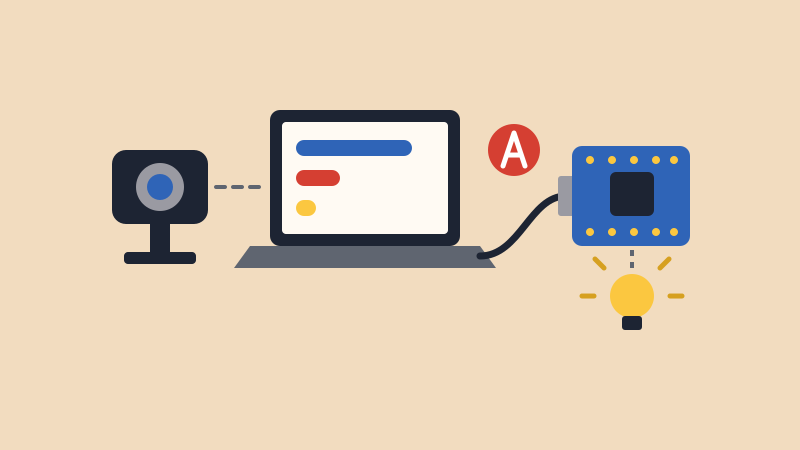

Teachable Machine lets you train a computer to recognize things by showing it examples, with no code. You could show it a thumbs up and a thumbs down, your face and an empty chair, or a red cup and a blue cup.
Your laptop runs the model, and it tells your Arduino what it sees by sending one letter over the USB cable. Your Arduino just needs to know what to do with each letter.
Your board doesn’t run the model itself. Even Teachable Machine’s smallest model for microcontrollers is about 500 KB, and the Nano 33 IoT holds 256 KB. So your laptop and USB cable need to stay connected the whole time.
Add a class for “nothing.” Record the empty background, with nothing you care about in view. Otherwise, the model has to choose one of your classes even when nothing is there.
Train it where you’ll show it. A model learns the lighting and background along with your object, so record in the room where you’ll use it.
NoteTeachable Machine says your training samples aren’t sent to any servers. Only the finished model is uploaded, and anyone with the link can use it.
Each time the model becomes sure of something new, your Arduino gets one letter. This sketch turns the built-in LED on for A and off for B.
// Teachable Machine: do something with each letter
void setup() {
Serial.begin(9600);
pinMode(LED_BUILTIN, OUTPUT);
}
void loop() {
if (Serial.available() > 0) {
char letter = Serial.read();
if (letter == 'A') {
digitalWrite(LED_BUILTIN, HIGH);
}
if (letter == 'B') {
digitalWrite(LED_BUILTIN, LOW);
}
}
}This is the same Serial.read() from the Keyboard lesson. There, you
typed letters into the Serial Monitor. Here, the bridge page
types them for you.
After uploading, close the Serial Monitor. Only one program can use the board at a time.
Open the Teachable Machine Bridge in Chrome or Edge.
Now show the camera your classes. The bars show how sure the model is, and your Arduino’s LED changes when the letter changes.
The slider sets how sure the model has to be before it sends a letter. Raise it if the letter changes when it shouldn’t. Lower it if the letter never changes.
Once the LED works, change what each letter does. For example, here’s a servo that moves to a different angle for each class. Wire it as in the Sweep lesson, with the signal wire on pin 9.
// Teachable Machine: move a servo with each letter
#include <Servo.h>
Servo myservo;
void setup() {
Serial.begin(9600);
myservo.attach(9);
}
void loop() {
if (Serial.available() > 0) {
char letter = Serial.read();
if (letter == 'A') {
myservo.write(0);
}
if (letter == 'B') {
myservo.write(90);
}
if (letter == 'C') {
myservo.write(180);
}
}
}More ideas:
tone(8, 440); for one letter and
noTone(8); for another.Keyboard.write() from the Keyboard and Mouse lesson,
so your model can play a game.Want to change how the page looks or what it does? The p5.js Bridge tutorial shows how to build your own.
Serial.println(), and it shows up under
From your Arduino on the bridge page.